DC component only
All SH coefficients

Andrew ID: skorada
I generated one NDC coordinate for every image pixel, unprojected those points through the camera, and formed normalized world-space ray directions from the camera center.
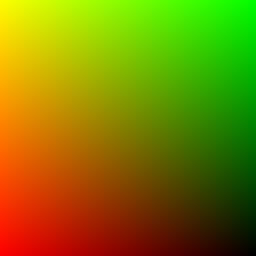
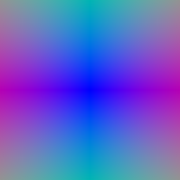
I sampled uniformly spaced depths between the near and far planes and evaluated each point as origin + depth * direction.
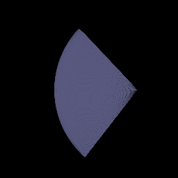
For each ray I computed alpha from density and segment length, accumulated exclusive transmittance, and used the resulting weights to aggregate both color and depth.
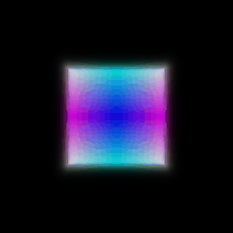
I trained the box with random ray batches and mean-squared color error. The learned center was (0.25, 0.25, 0.00) and its side lengths were (2.01, 1.50, 1.50), rounded to two decimals.
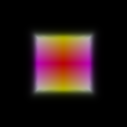
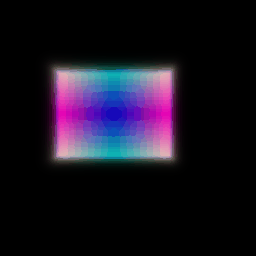
The NeRF uses harmonic position encoding followed by an MLP that predicts nonnegative density and sigmoid-bounded RGB. It was optimized from posed RGB views using mean-squared error.
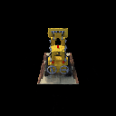
I separated density from appearance and conditioned the color head on the viewing direction using a two-frequency harmonic embedding. Position still determines density, while the direction branch lets specular appearance change across views. The result below uses the materials scene.
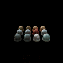
View conditioning represents reflections more faithfully, but it also increases model capacity: the network can explain training images with direction-specific colors instead of consistent geometry. Limiting the direction encoding to fewer frequencies helps retain generalization to unseen views.
I represented geometry with a neural signed-distance field, added an Eikonal penalty that encourages gradient norm one, and mapped signed distance to density with the VolSDF cumulative-Laplace formulation. The color MLP is evaluated at the same sampled positions.
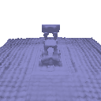
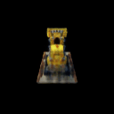
Alpha scales the maximum density and therefore the amount of opacity a surface can accumulate. Beta controls the width of the transition around the zero level set. A low beta produces a sharper, more surface-like density; a high beta spreads density across a thicker region and biases learning toward smoother, less precisely localized surfaces. High beta is generally easier to optimize because more samples receive useful gradients, while low beta is more likely to yield an accurate surface once training succeeds.
I ran a 25-epoch ablation over the Eikonal weight, alpha, and beta. Raising alpha from 10 to 20 gave the best validation PSNR, 20.65 dB. A high beta produced a much denser, noisier extracted mesh and the lowest planarity score.
| Setting | Eikonal weight | Alpha | Beta | Val. PSNR | Mesh vertices |
|---|---|---|---|---|---|
| Baseline | 0.02 | 10 | 0.05 | 20.05 | 1,884 |
| Low Eikonal | 0.005 | 10 | 0.05 | 20.43 | 2,003 |
| High alpha | 0.02 | 20 | 0.05 | 20.65 | 1,886 |
| Low beta | 0.02 | 10 | 0.02 | 20.12 | 2,280 |
| High beta | 0.02 | 10 | 0.10 | 19.72 | 22,919 |
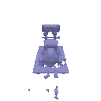
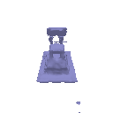
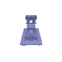
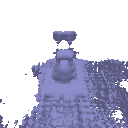
I projected each 3D covariance into the image plane with the camera Jacobian, evaluated the resulting 2D Gaussians per pixel, depth-sorted visible splats, and composited color, depth, and silhouette front to back.
I trained isotropic Gaussians for 1,000 iterations with an RGB MSE loss plus mask MSE. Adam learning rates were 0.05 for opacity, 0.0005 for scale, 0.01 for color, and 0.0002 for position. Held-out performance was 29.399 dB PSNR and 0.936 SSIM.
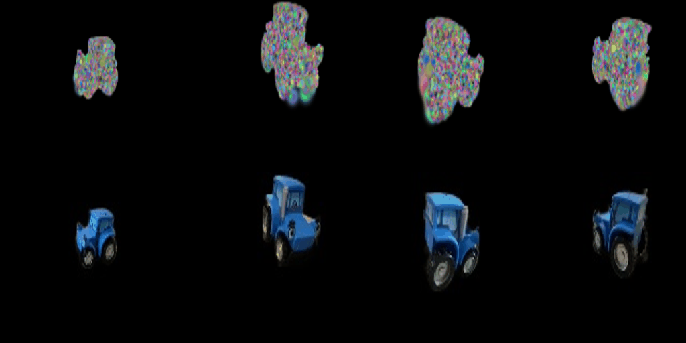
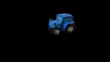
I evaluated all degree-three spherical-harmonic coefficients against the normalized camera-to-Gaussian direction, producing a different RGB value for each Gaussian at each view. The view-dependent version reached 29.586 dB PSNR and 0.938 SSIM, a small improvement over the DC-only model.
In the first view, spherical harmonics recover stronger local highlights and more varied surface color; DC-only rendering averages these effects into flatter tones.
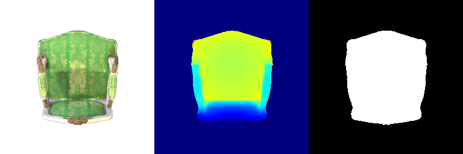

At the side view, the SH image changes the highlight pattern with the camera direction and preserves more contrast on oblique surfaces.
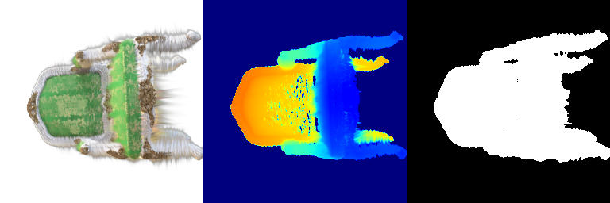

From the opposite view, the direction-dependent colors move with the viewpoint rather than remaining baked into each Gaussian, producing a more convincing appearance.

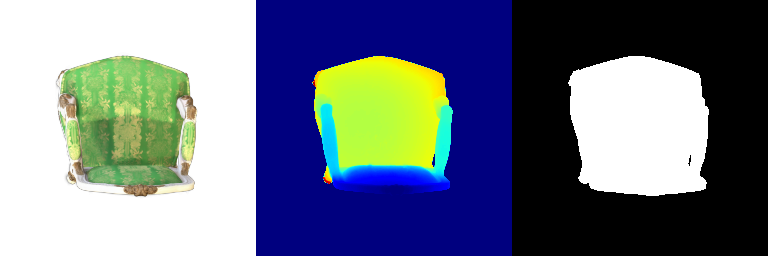